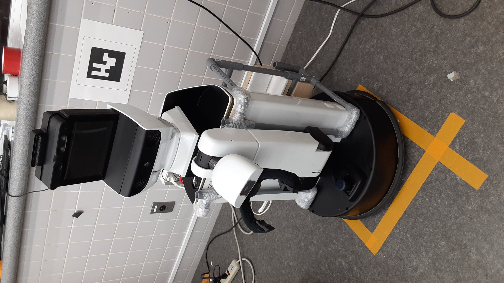
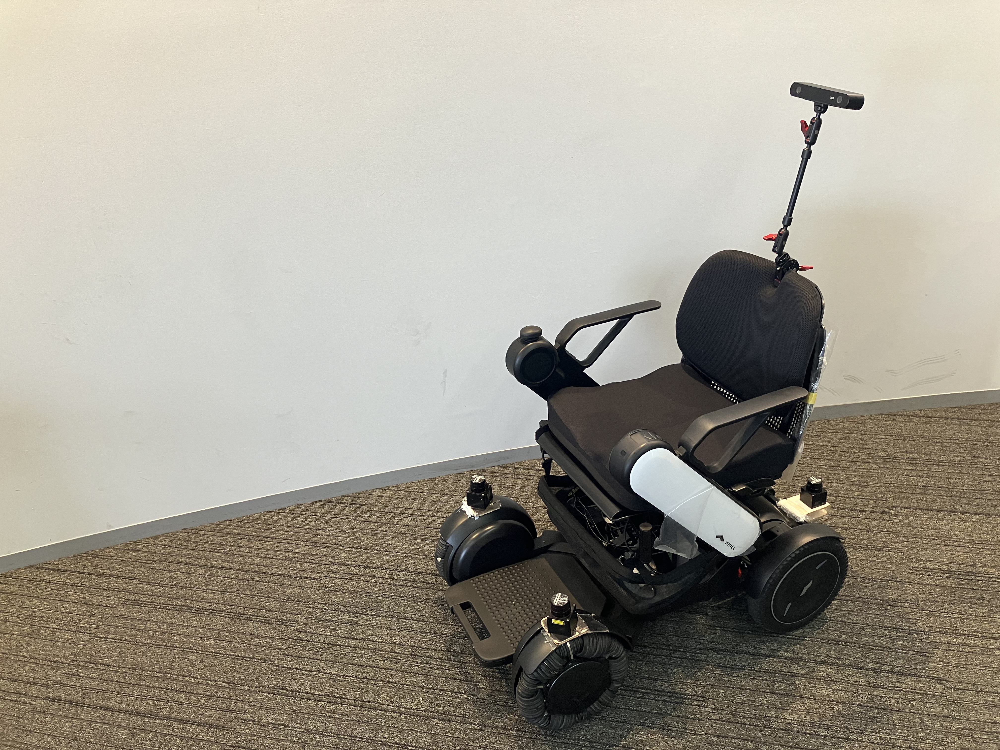

About Me
I am a Lecturer and Robotics Researcher at Telkom University in Surabaya, Indonesia, within the Department of Computer Engineering, Faculty of Electronics Engineering. I hold a Ph.D. from Tokyo Metropolitan University in Mechanical Systems Engineering, where I gained extensive experience as a research assistant under the Kubota Naoyuki Lab.
My research spans a variety of robotics fields including human-robot interaction, robotic manipulation, autonomous navigation, aerial robotics, and rehabilitation robotics. During my time in Japan, I actively collaborated with leading universities and research institutes as part of the prestigious Moonshot Project under JST (Japan Science and Technology Agency).
My current research focuses on robotics and digital twin technologies, with particular interests in mobile robot navigation, robotic manipulation, and topological semantic mapping. I work on developing intelligent robotic systems that can perceive, understand, and interact with complex environments, while leveraging digital twin frameworks to enhance simulation, monitoring, and real-world deployment. My research aims to bridge perception, decision-making, and control to enable more adaptive, autonomous, and context-aware robotic applications.
Research Projects

Toyota HSR – Human Support Robot
Developed navigation, manipulation, and activity recognition systems for the Toyota HSR as part of the JST Moonshot Project at Tokyo Metropolitan University.

Autonomous Intelligent Wheelchair
Designed and implemented an autonomous navigation system for an intelligent wheelchair robot equipped with depth cameras and LiDAR sensors for obstacle avoidance.
Education
Publications
See also: Google Scholar
Awards & Scholarships
Ministry of Education, Culture, Sports, Science and Technology of Japan · Tokyo Metropolitan University
Ministry of Education, Culture, Sports, Science and Technology of Japan · Tokyo Metropolitan University
M.Phil. in Electronics Systems Engineering · Universiti Teknologi Malaysia – Malaysia Japan International Institute of Technology
Teaching
Robotics
Basic robotics including kinematics, dynamics, navigation, and probabilistic methods for electronics and computer engineering students.
Systems Analysis and Design
Modelling systems and applying analysis to create systems that meet user demands.
Artificial Intelligence
Basic introduction to AI and fundamental machine learning concepts for computer engineering students.
Real-Time Operating Systems (RTOS)
Using ESP32 module: task scheduling, delay management, queue handling, and memory management.